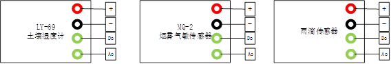

自动播报微型气象站
本项目研究多功能型自动播报微型气象站。一款自主研发的高度融合的传感集成产品，拥有强大的编程代码， 实现对土壤温湿度，气温，气压，降雨量等的实时检测，且可以用语音方式输出，广泛应用于农业，校园，室内等领域。 相比于市场上的同类产品，我们的优势在于：我们的产品集多种功能为一体，实时精准播报，操作方便，便携。充分实现智慧农业。
钟雅诗：为项目总负责人，主要负责程序设计以及团队的协调工作；
陆媚、覃怡：负责项目的主要程序设计工作；
史恒瑜、平静雯：对c语言程序设计、计算机导论，财务管理等专业课程有很好的掌握，
以及熟悉数据库的搭建与运用，能很好的运用到我们的产品研发中
一种基于树莓派的气象数据收集及预报装置，包括一个数据处理节点和至少一个数据采集节点， 数据采集节点通过无线与数据处理节点相连；其中数据采集节点包括蓝色低功耗SoC模块及均与蓝色低功耗SoC模块相连的GPS模块、 电源模块、温湿度传感器模块、气压传感器模块和风力传感器模块；所述数据处理节点为树莓派单元。
所述GPS模块提供采集节点的地理位置信息。蓝色低功耗Soc模块和树莓派单元之间采用蓝色低功耗(BLE)协议进行通信。 温湿度传感器模块能实时监测环境温湿度，并输出信号蓝色低功耗Soc模块。气压传感器模块能实时监测环境气压大小， 并输出信号给蓝色低功耗Soc模块。风力传感器模块能实时检测风向和风力大小，并输出信号给蓝色低功耗Soc模块。 蓝色低功耗Soc模块采用nRF51822芯片。分别搭建MQTT服务器、实现Sqlite、实现INotifyPropertyChanged。
硬件连接图

烟雾气敏传感器
土壤湿度传感器
语音模块+麦克风
扬声器和mp3模块
雨滴模块
根据部分功能的需求，其传感器引脚图如下图所示：根据来自外界的各种信号转换成电信号。 通过电信号把信息传给树莓派，达到信息收集的目的。数据按照程序预设代码输出。
传感器引脚图

根据部分功能的需求，其传感器引脚图如下图所示：根据来自外界的各种信号转换成电信号。 通过电信号把信息传给树莓派，达到信息收集的目的。数据按照程序预设代码输出。
1.基于气象信息分析的强大算法 设备所携带的功能需要适配的算法，我们通过前期上百次实验获得两万余组数据，采用一套较为精确的实时判定算法， 判定算法通过对环境数据收集进行实时分析，从而得到实时的气象信息。 2.实用便捷 基于加速度传感器的树莓派具有体积小、价格低、灵敏度高、功率低的特点，容易集成于小型设备中， 不论将其置于室内还是恶劣的外界环境中，均可实现气象信息的获取。 3.技术先进 通过物联网技术及先进算法增强对信息获取的效果。 4.应急服务前景广阔： 分钟数据的实时采集、储存，使其具有了人工站所不及的应急服务能力。 5.可观的开发潜力 我们后期将在树莓派40个IO接口上实现温室检测、气压传感、烟雾检测 等多项功能，使我们的产品功能更加完善